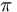

De: La Frikipedia, la enciclopedia extremadamente seria.
De: La Frikipedia, la enciclopedia extremadamente seria. De: La Frikipedia, la enciclopedia extremadamente seria.

|
ATENCIÓN El autor de este artículo pide una ayudita. Porque es más triste de robar que de pedir. Se le han terminado las ideas y pide de rodillas a los frikipedistas (más listos, inteligentes y guapos que él) que le ayuden a terminar o mejorar su obra. |
| De la serie ciudades del mundo: | |||||
| Málaga | |||||
| |||||
| Topónimo oficial | Bokerones, Chanketes, Chanketillos | ||||
| País | España | ||||
| Código postal | 29XXX (las X son por el porno) | ||||
| Superficie | 50% asfalto, 30% tierra, 19% escombros, 1% vegetación | ||||
| Altitud | -50m | ||||
| Distancia | 230 km de Sevilla | ||||
| Fundación | 432 d.C. por sevillanos | ||||
| Población | En invierno: 4 gatos, 50quinquis, 6 frikis En verano: 3 millones de guiris | ||||
| Gentilicio | malagueño/a saleroso/a, malacitano/a, boqueron/a, malaguita,... | ||||
| Alcalde | Francisco de la Torre (PePe) en desfunciones y Manuel Chaves en restricciones | ||||
Málaga, antigua sede rebelde contra el Imperio Sevillista.
Actualmente, está bajo poder de la monarquía guiri, conquistada en 1999 por un sector altamente entrenado del ejército guirilandia, denominado turistas.
Los Sevillistas fundaron la ciudad en el año 432 D.C. Al principio, la convivencia era pacífica entre ambos pueblos, pero un grupo de Sevillistas crearon el Sevilla C.F.. Obligaron a los Malagueños a crear un equipo de fútbol, la Mosca Fútbol Club, pero por el simple hecho de tener a alguien a quien vencer, al ser incapaces de vencer al Madrid C.F. No permitían entrenamientos a los miembros de la Mosca, para así siempre tener una ventaja infinitamente mayor, sin contar también con que los árbitros eran ProSevillistas.
Los Rebeldes Malagueños, hartos de perder, decidieron formar el Málaga C.F. Se entrenaron en secreto, recibieron donaciones importantes, y con esto apareció un nuevo estilo de jugar al fútbol denominado Comprar al árbitro. En el momento menos esperado, el Málaga C.F. desafió y vencio a los Sevillistas, y los obligaron a dejar Málaga. Asi, Málaga obtuvo su independencia, para perderla unos años después por el todopoderoso Ejército Guiri de Turistas.
Esta situación, a pesar del dominio LFP. La crueldad al perdedor sigue siendo la misma.
Circula por ahí en forma de email el capítulo del Génesis de la Biblia Malagueña del 2004+1 a.C. en la que se puede leer el mito que explica cómo se creó la ciudad.
Por arte del Ctrl-C_Ctrl-V, helo aquí:

|
Érase una vez en el Reino de los Cielos, Dios estuvo ausente durante seis días. El Arcángel San Miguel, de repente, lo encuentra descansando al séptimo día y le preguntó a Dios:
—¿Dónde has estado? Dios, mostrando una sonrisa de gran satisfacción y apuntando con el dedo hacia abajo a través de las nubes, le dice: —Mira, Miguel; mira lo que he creado. El Arcángel, confundido, miró y dijo: —¿Qué es eso?. —Es un Planeta- le responde Dios -Y he puesto vida en él. Le llamaré Tierra. Y será un sitio donde todo estará equilibrado. —¿Equilibrado?— preguntó Miguel todavía confuso. Dios le explicó, apuntando a las diferentes partes de la Tierra: —Mira, por ejemplo, Europa del Norte será un lugar de grandes oportunidades y riqueza mientras que el sur será mas pobre; el Oriente Medio será una "zona caliente". Por aquí he puesto un continente de gente blanca, y por aquí he puesto uno de gente negra. Dios continuó apuntando a los diferentes paises. —Éste otro será extremadamente árido y cálido mientras que éste será frío y cubierto de hielo. El Arcángel estaba impresionado con el trabajo de Dios. Entonces apuntó hacia una pequeña masa de tierra: —¿Qué es esto?— preguntó. —¡Ah!— dijo Dios. —Eso es España y allí, Málaga: el sitio más glorioso de la Tierra. Tiene largas y apacibles playas, bonitos montes y atardeceres inigualables; Las gentes de Málaga serán modestos, inteligentes, alegres y de buen talante; los verán viajando por todo el mundo. Serán extremadamente sociables, trabajadores incansables y ganadores. Serán conocidos por el mundo como gente inigualable. Miguel estaba anonadado por tanta maravilla y bondad, y exclamó: —¿Qué hay del equilibrio, Dios? ¡Dijiste que todo estaba equilibrado! Dios, sabiamente, le respondió: —¡¡Espera que veas la pila de gilipollas que he puesto frente a ellos en Sevilla!!!. |

|
| Epístola de la creción de Málaga según San Dios. Biblia malagueña capt 11; vers. |
Por supuesto, este mito es totalmente falso. Todo el mundo sabe que Dios creó primero a los vascos, pero resulta interesante para entender la naturaleza tremendamente humilde y modesta del pueblo malagueño, aparte de su gran imaginación y el tremendo amor que sienten por sus vecinos de Sevilla.
El idioma oficial de Málaga es el malagueño, subdialecto del charnego.
Es una lengua con características únicas, entre las que destacan:
El fenómeno más curioso del malagueño es que la jota se come, en vez de aspirarse, a su vez que la hache tiende a pronunciarse como jota.
Así, en el malagueño existen las palabras coneo, cruí, raá y trainase, pero no conejo, crujir, rajar y trajinarse. Obtenemos asi grandes expresiones como: "¿Que paza canío?", etc.
Hijo es la excepción, la traducción al malagueño es ío, lo que da una idea de lo que ahorran en tinta los malagueñohablantes.
Una expresión muy comun por los malagueños es la de viejo, utilizada comúnmente en citas como: "Foh vieo", "Eh o no, vieo", "Foh, no vea abe vieo".
Sabes, llevado al malagueño como abe (no confundir con ave) es una coletilla muy común en la expresión.
Los malagueños (y las malagueñas) son unos magos del humor y la ironía más fina.
Algunos ejemplos:
La fauna de Málaga se compone principalmente de homo malacitanus, malagueño o malagueña común.
También existe una creciente quinquis, buena parte de la cual se compone de la especie autóctona homo quinqui malacitanus, que reciben el apelativo cariñoso de merdellon, quincorro, winxi,.. entre sus paisanos.
Existe también una pequeña colonia de homo guiri que se quedan incluso durante el invierno, pero es durante la época migratoria del verano, sobre todo, Agosto, cuando bandadas y bandadas de guiris llegan volando y abarrotan las playas malagueñas para adquirir el saludable color rojizo que les caracteriza, por lo que reciben también el nombre de salmonetes e indios.
Entre las especies guiris que visitan o habitan en Málaga, la gran mayoría pertenece a la subespecie homo britannicus, especialmente la rama homo britannicus onlyenglish, dentro de la cual existen dos formas de comportamiento dominantes:
El cómo puede durar una caña de cerveza tanto tiempo en pleno Agosto es un fénomeno que ha despertado un gran interés entre la comunidad científica internacional. El estudio no ha obtenido aún pruebas concluyentes, pero se sospecha que tales individuos pertenecen a la subespecie homo britannicus scottish, que son muy ahorrativos gracias a que pueden absorber la escasa humedad del aire.
La vegetación prácticamente no existe: se la han comido los edificios de Marbella y las cabras.
Entre los malagueños ha habido, hay y habrá hombres y mujeres de fama mundial por su excelencia en sus oficios. Destacamos:
Autor(es):